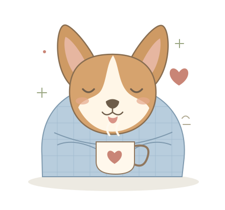

ЕСЛИ СЕГОДНЯ ТАКОЙ ВЕЧЕР
Что тебе сейчас ближе?
Никакого правильного ответа. И отвечать не обязательно.
Так хочу обнять. Переживаю за тебя, лапочка, и хочу, чтобы тебе стало легче. Пока не видимся, пусть здесь будет немного моего тепла.

Никакого правильного ответа. И отвечать не обязательно.
Я очень скучаю.
Так хочу обнять.
На случай, если захочется услышать что-нибудь родное.
Принёс тебе что-то маленькое и приятное. Никаких обязательств, честное коржиковое.
На маленьких бумажках — то, что хочется сделать с тобой, когда появятся силы. Без даты и спешки. Просто чтобы улыбнуться.
Лапочка, мне не нужно, чтобы ты была бодрой и весёлой ради меня. Если захочешь — напиши, как ты. Даже если слова пока не подбираются.
Можно просто «побудь со мной» ↗Твой СанечекЛапочка, если вечер не очень — мне можно так и сказать. Или просто попросить обнять.
Леся, очень хочу, чтобы тебе поскорее стало легче. Здесь можно быть сонной, уставшей и совсем не бодриться ради меня.
Это заранее написанная поддержка на странице. Записи остаются в твоём браузере.
Когда лучше позвать врача ↗Здесь до 7 последних отметок. Записи хранятся только в этом браузере, на этом устройстве. В общем браузере их могут видеть другие пользователи.
Пледик, душик, мягкая пижама. А ниже — полезная памятка для взрослых, если понадобится. Она не заменяет врача.
Когда нужна помощь врача ↗Это не лечение вируса. Просто маленькие штуки, от которых может стать приятнее. Выбирай по самочувствию, хоть одну, хоть ни одной.
Если зябко — укутайся. Если жарко — сними лишнее. Плед сегодня работает по твоим правилам.
Короткий и не горячий, если есть силы. При головокружении или сильной слабости отложи: душик никуда не убежит.
Самая мягкая вещь из шкафа. Сегодня можно официально выглядеть как уютный пирожочек.
Когда щекой в чистое бельё — и уже немножко «ммм». Маленький отель для любимой Леси.
Знакомый и добрый. Где можно уснуть посередине, а герои совершенно не обидятся.
Назначена заместителем по обнимашкам. Можно тискать. Полномочия самые серьёзные.
Можно вообще сюда не заходить. Это просто дополнительные мелочи для удобства.
Если хочется отметить что-нибудь для себя. Без счётчика и обязательств.
Даже один маленький шаг — уже забота.
Когда захочется, лапочка. Пусть будет тёплым, не горячим.
Я мягко напомню, пока страница открыта и активна. На заблокированном телефоне таймер может задержаться.
Без спешки. Ты задаёшь свой ритм.
Три напоминания на завтра: 11:00, 15:00 и 19:00.
Открой файл в календаре и сохрани события с уведомлением.
Средства от боли или температуры подбирай с врачом или фармацевтом. Соблюдай инструкцию и противопоказания. Не дублируй действующее вещество в нескольких препаратах.
Антибиотики не лечат вирусы. При подозрении на грипп или COVID-19 обратись рано, особенно при беременности, хронических заболеваниях или сниженном иммунитете: врач решит, нужны ли тесты и раннее лечение.
В национальном бюллетене за 2–8 ноября 2026 года Краснодар указан среди городов, где выявляли грипп A(H1N1)pdm09. По России также обнаруживали риновирусы, парагрипп, аденовирусы и другие респираторные вирусы.
Это данные наблюдения, а не ответ на вопрос, чем заболела ты. Симптомы простуды, гриппа и COVID-19 пересекаются. Необходимость теста лучше обсудить с врачом.
Бюллетень НИИ гриппа ↗Проверено 17 ноября 2026. Сводка не обновляется автоматически.
При температуре, ознобе, ломоте и выраженной слабости не участвуй в физической нагрузке. Обратись в медпункт или к врачу и попроси освобождение. Даже при лёгких симптомах интенсивную нагрузку лучше отложить, а возвращение к ней обсудить с врачом и делать постепенно, по самочувствию.
Если посещение занятий неизбежно: предупреди преподавателя, попроси спокойный формат, делай паузы и избегай тесных контактов. В общих помещениях пригодится хорошо прилегающая маска; меняй её, если намокла. Термос и шарф дают комфорт, но не делают тяжёлую нагрузку безопасной.
Необычная одышка, боль в груди, головокружение, сердцебиение или чрезмерная усталость во время движения — повод прекратить нагрузку и обратиться к врачу. При сильной боли в груди, тяжёлом дыхании, обмороке — срочная помощь.
Консенсус МОК об инфекциях и возвращении к нагрузке ↗Срочно звони 112 или 103 в России, если тяжело дышать, есть сильная или постоянная боль в груди, спутанность сознания, трудно проснуться, синеют губы или состояние быстро ухудшается.
Позвонить 112Свяжись с врачом, если температура держится больше 3 дней, признаки обезвоживания (мало мочи, сильная сухость, головокружение), симптомы не улучшаются больше 10 дней или стало хуже после улучшения. При беременности, иммунодефиците или серьёзных хронических болезнях обратись раньше, даже при лёгких симптомах. Любой тревожный симптом — повод обратиться, не дожидаясь сроков.
Проверено 17.11.2026. Рекомендации по облегчению симптомов и обращению за помощью:
NHS — боль в горле ↗NHS — температура у взрослых ↗NHS — кашель ↗NHS — простуда и самопомощь ↗Mayo Clinic — физическая нагрузка во время болезни ↗CDC — облегчение симптомов и признаки осложнений ↗CDC — раннее лечение гриппа и COVID-19 ↗CDC — когда нужна экстренная помощь ↗Тёплое питьё, носочки и плед помогают устроиться комфортнее, но не уничтожают вирус и не гарантируют быстрое выздоровление.